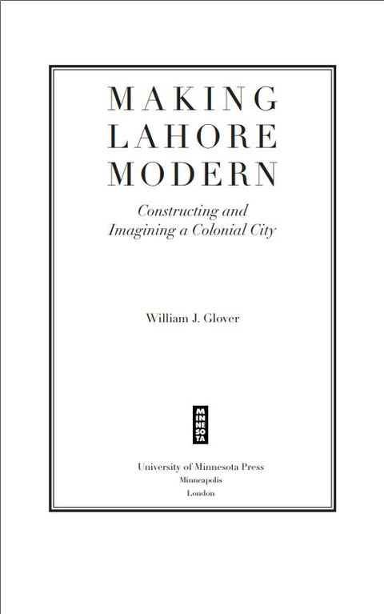
Making Lahore Modern
یہ کتاب 2008 میں شائع ہوئی ہیں۔کتاب اپنے موضوع میں تو منفرد ہے ہی لیکن اس میں موجود نادر تصاویر اسے مزید ممتاز بنا دیتی ہیں کتاب کا بنیادی موضوع برطانوی راج کے دوران لاہور شہر کی جدید طرز پر تعمیر و ترقی اور شہر کے بدلتے ہوئے نقشے اور مزاج کی تاریخ ہے۔
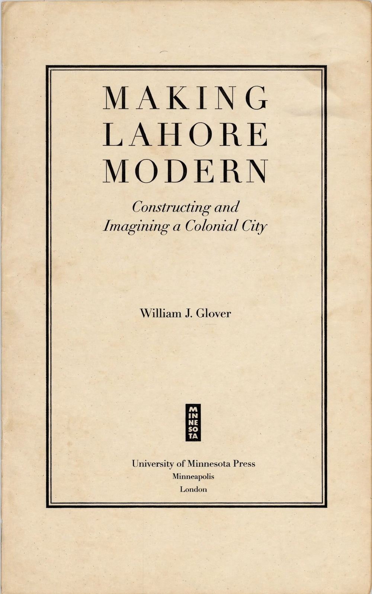
1
MAKING LAHORE MODERN — Constructing and Imagining a Colonial City. William J. Glover. University of Minnesota Press, Minneapolis, London.
”لاہور کو جدید بنانا“ — ایک نوآبادیاتی شہر کی تعمیر اور اس کا تصور۔ مصنف: ولیم جے گلوور۔
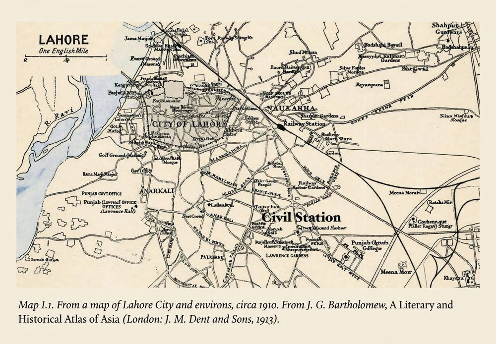
2
Map 1.1. From a map of Lahore City and environs, circa 1910. From J. G. Bartholomew, A Literary and Historical Atlas of Asia (London: J. M. Dent and Sons, 1913).
نقشہ 1.1: لاہور شہر اور گردونواح کا نقشہ، تقریباً 1910ء۔ ماخذ: جے جی بارتھولومیو کی اطلس، 1913ء۔
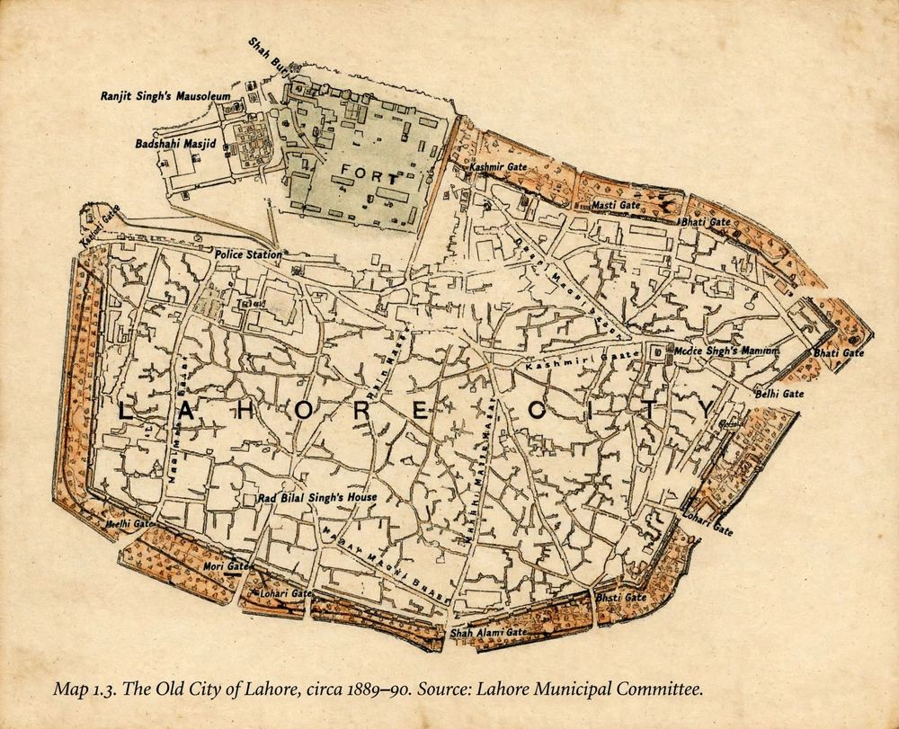
3
Map 1.3. The Old City of Lahore, circa 1889–90. Source: Lahore Municipal Committee.
نقشہ 1.3: پرانا لاہور شہر، تقریباً 1889ء تا 1890ء۔ ماخذ: لاہور میونسپل کمیٹی۔
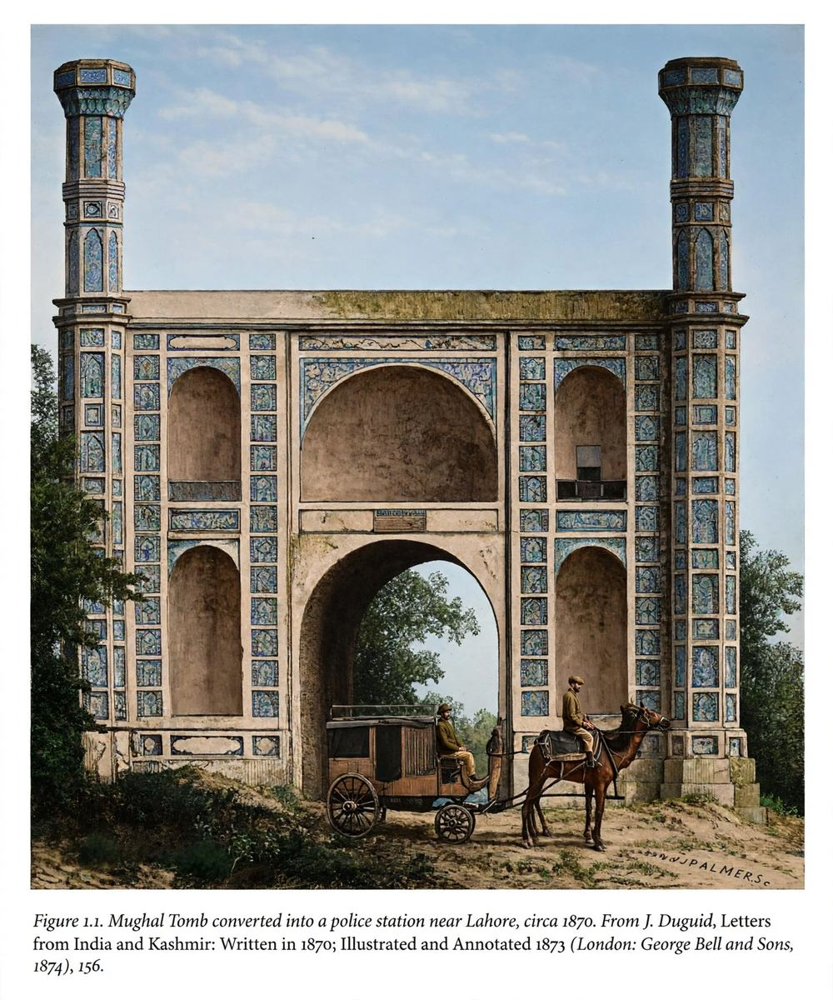
4
Figure 1.1. Mughal Tomb converted into a police station near Lahore, circa 1870. From J. Duguid, Letters from India and Kashmir: Written in 1870; Illustrated and Annotated 1873 (London: George Bell and Sons, 1874), 156.
تصویر 1.1: لاہور کے قریب ایک مغل مقبرہ جسے تھانہ بنا دیا گیا، تقریباً 1870ء۔
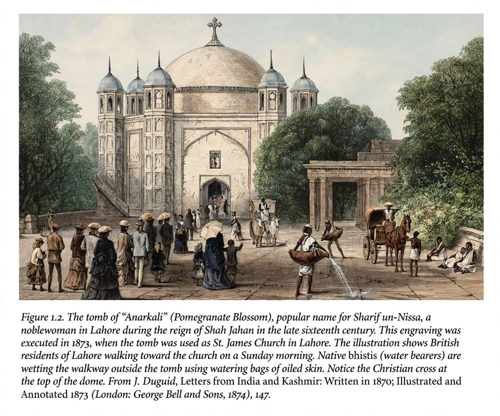
5
Figure 1.2. The tomb of “Anarkali” (Pomegranate Blossom), popular name for Sharif un-Nissa, a noblewoman in Lahore during the reign of Shah Jahan in the late sixteenth century. This engraving was executed in 1873, when the tomb was used as St. James Church in Lahore. The illustration shows British residents of Lahore walking toward the church on a Sunday morning. Native bhistis (water bearers) are wetting the walkway outside the tomb using watering bags of oiled skin. Notice the Christian cross at the top of the dome. From J. Duguid, Letters from India and Kashmir: Written in 1870; Illustrated and Annotated 1873 (London: George Bell and Sons, 1874), 147.
تصویر 1.2: انارکلی (شریف النسا) کا مقبرہ، جو 1873ء میں سینٹ جیمز چرچ کے طور پر استعمال ہو رہا تھا؛ انگریز باشندے اتوار کی صبح گرجا کی طرف جا رہے ہیں اور بھشتی راستے پر پانی چھڑک رہے ہیں۔
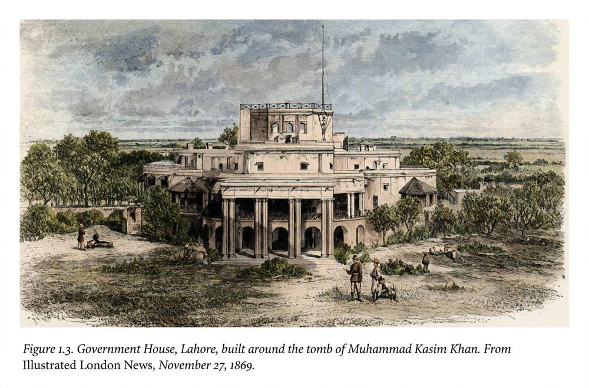
6
Figure 1.3. Government House, Lahore, built around the tomb of Muhammad Kasim Khan. From Illustrated London News, November 27, 1869.
تصویر 1.3: گورنمنٹ ہاؤس لاہور، جو محمد قاسم خان کے مقبرے کے گرد تعمیر ہوا۔ ماخذ: السٹریٹڈ لندن نیوز، 27 نومبر 1869ء۔
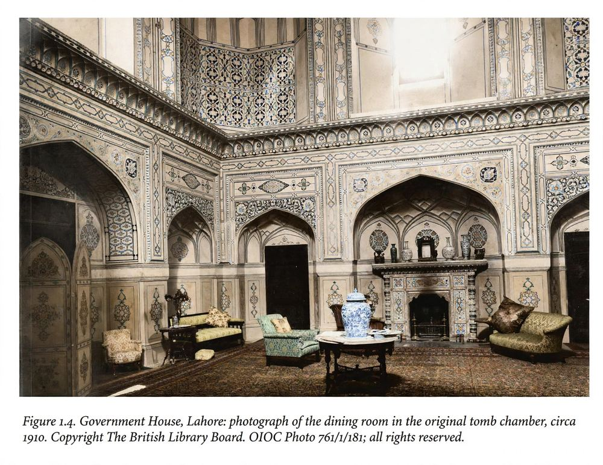
7
Figure 1.4. Government House, Lahore: photograph of the dining room in the original tomb chamber, circa 1910. Copyright The British Library Board. OIOC Photo 761/1/181; all rights reserved.
تصویر 1.4: گورنمنٹ ہاؤس لاہور — اصل مقبرے کے حجرے میں بنے کھانے کے کمرے کی تصویر، تقریباً 1910ء۔
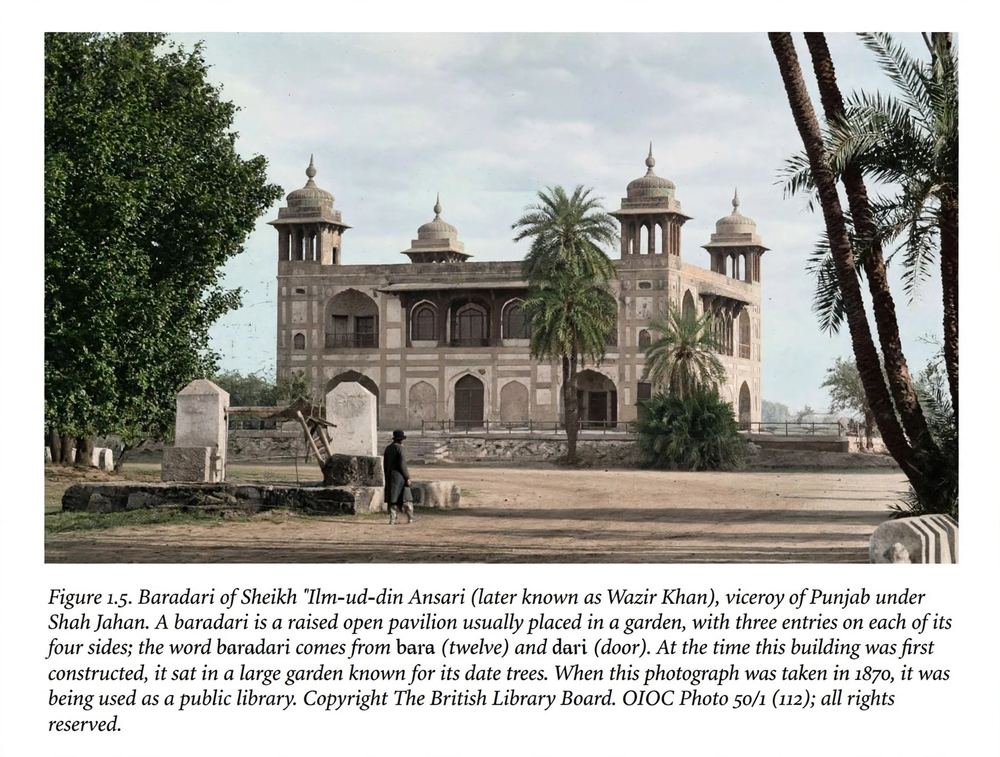
8
Figure 1.5. Baradari of Sheikh 'Ilm-ud-din Ansari (later known as Wazir Khan), viceroy of Punjab under Shah Jahan. A baradari is a raised open pavilion usually placed in a garden, with three entries on each of its four sides; the word baradari comes from bara (twelve) and dari (door). At the time this building was first constructed, it sat in a large garden known for its date trees. When this photograph was taken in 1870, it was being used as a public library. Copyright The British Library Board. OIOC Photo 50/1 (112); all rights reserved.
تصویر 1.5: شیخ علم الدین انصاری (وزیر خان) کی بارہ دری، جو 1870ء میں عوامی کتب خانے کے طور پر استعمال ہو رہی تھی۔

9
Figure 1.6. The Lahore Railway Station, designed by William Brunton, C. E. in 1858. Notice the crenellated towers, battered walls, and loopholes in the station's parapets. This photograph was taken on the occasion of a visit to Lahore by Sir Louis and Lady Dane in April 1911. Dane was lieutenant governor of the Punjab from 1908 to 1913. Copyright The British Library Board. OIOC Photo 592/1/21; all rights reserved.
تصویر 1.6: لاہور ریلوے اسٹیشن، جو ولیم برنٹن نے 1858ء میں بنایا؛ تصویر اپریل 1911ء میں لیفٹیننٹ گورنر سر لوئس ڈین کے دورے کے موقع کی ہے۔
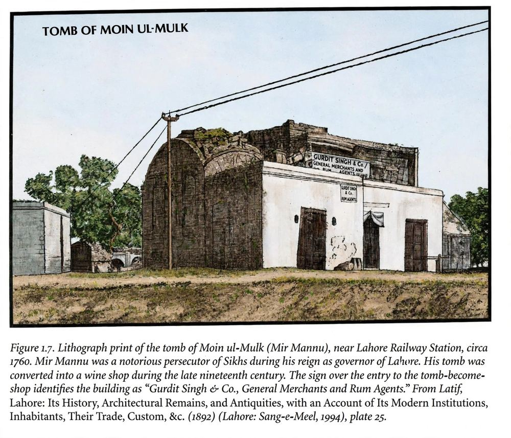
10
Figure 1.7. Lithograph print of the tomb of Moin ul-Mulk (Mir Mannu), near Lahore Railway Station, circa 1760. Mir Mannu was a notorious persecutor of Sikhs during his reign as governor of Lahore. His tomb was converted into a wine shop during the late nineteenth century. The sign over the entry to the tomb-become-shop identifies the building as “Gurdit Singh & Co., General Merchants and Rum Agents.” From Latif, Lahore: Its History, Architectural Remains, and Antiquities, with an Account of Its Modern Institutions, Inhabitants, Their Trade, Custom, &c. (1892) (Lahore: Sang-e-Meel, 1994), plate 25.
تصویر 1.7: معین الملک (میر منو) کے مقبرے کا خاکہ، جسے انیسویں صدی کے آخر میں شراب کی دکان بنا دیا گیا تھا۔
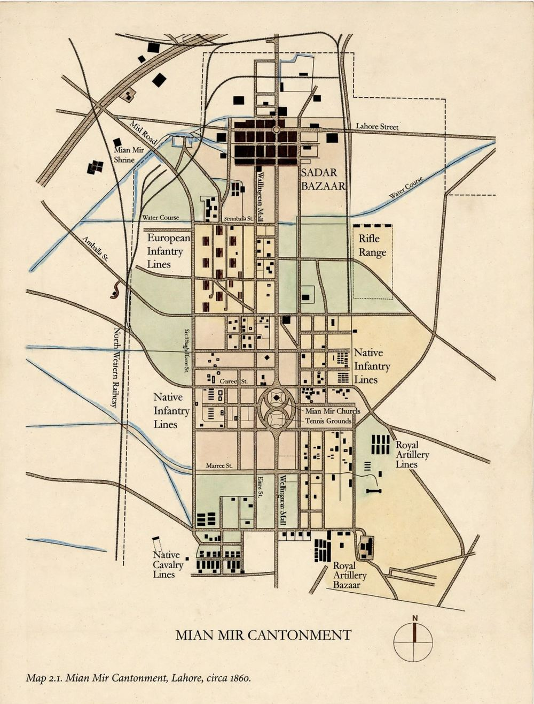
11
Map 2.1. Mian Mir Cantonment, Lahore, circa 1860.
نقشہ 2.1: میاں میر چھاؤنی، لاہور، تقریباً 1860ء۔
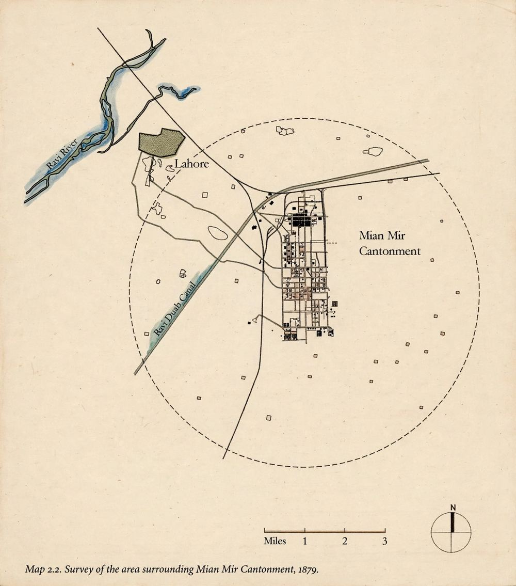
12
Map 2.2. Survey of the area surrounding Mian Mir Cantonment, 1879.
نقشہ 2.2: میاں میر چھاؤنی کے گردونواح کا جائزہ، 1879ء۔
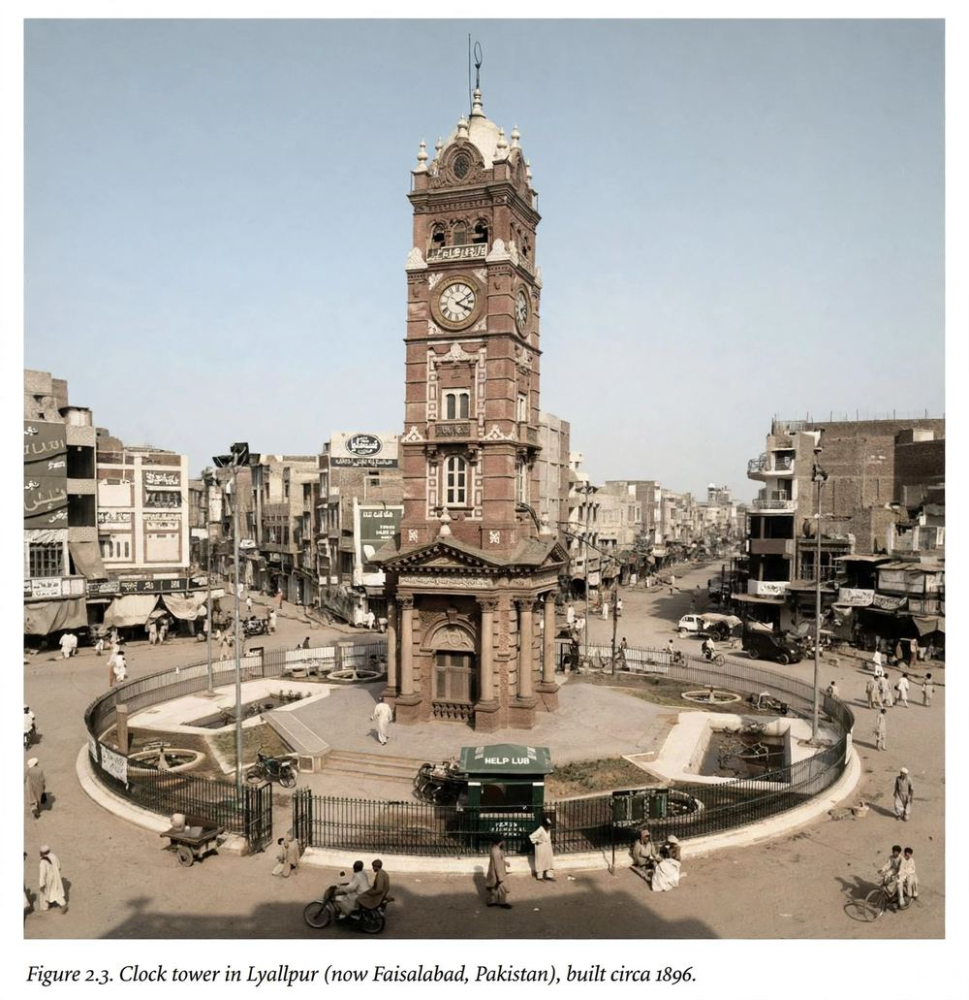
13
Figure 2.3. Clock tower in Lyallpur (now Faisalabad, Pakistan), built circa 1896.
تصویر 2.3: لائلپور (موجودہ فیصل آباد) کا گھنٹہ گھر، تقریباً 1896ء میں تعمیر ہوا۔

14
Figure 2.5. Stereophotograph of Kashmiri Bazaar sold by Underwood and Underwood, Lahore, 1903. This stereo image was sold to a largely British market; when viewed through special glasses, the image would appear three-dimensional. The minarets of the Mosque of Wazir Khan, where Kipling's narrator in “The City of Dreadful Night” was perched, are just visible at the top of the image. Copyright The British Library Board. OIOC Photo 181(15); all rights reserved.
تصویر 2.5: کشمیری بازار لاہور کی سٹیریو تصویر، 1903ء؛ پس منظر میں مسجد وزیر خان کے مینار نظر آتے ہیں۔

15
Figure 3.1. Lawrence Hall (left) and Montgomery Hall (right), conjoined by a passage. Notice the prominent clock tower at the midpoint of the joining passage. From Illustrated London News, March 17, 1886.
تصویر 3.1: لارنس ہال (بائیں) اور منٹگمری ہال (دائیں)، درمیان میں گھنٹہ گھر۔ ماخذ: السٹریٹڈ لندن نیوز، 17 مارچ 1886ء۔
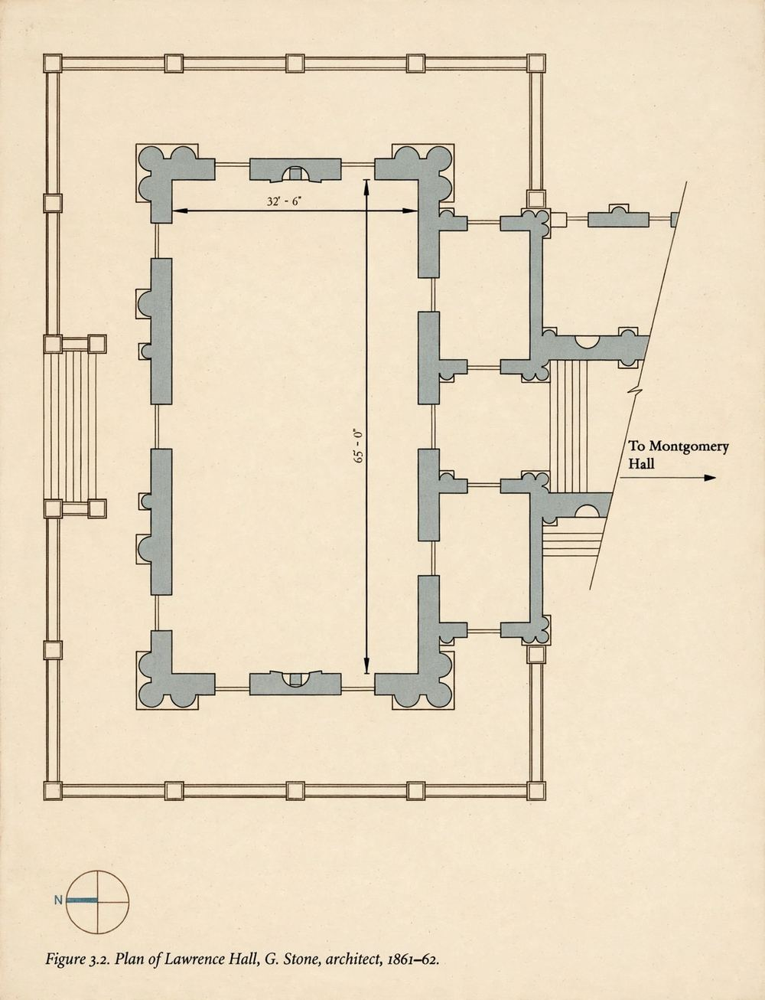
16
Figure 3.2. Plan of Lawrence Hall, G. Stone, architect, 1861–62.
تصویر 3.2: لارنس ہال کا نقشہ، معمار جی سٹون، 1861ء تا 1862ء۔
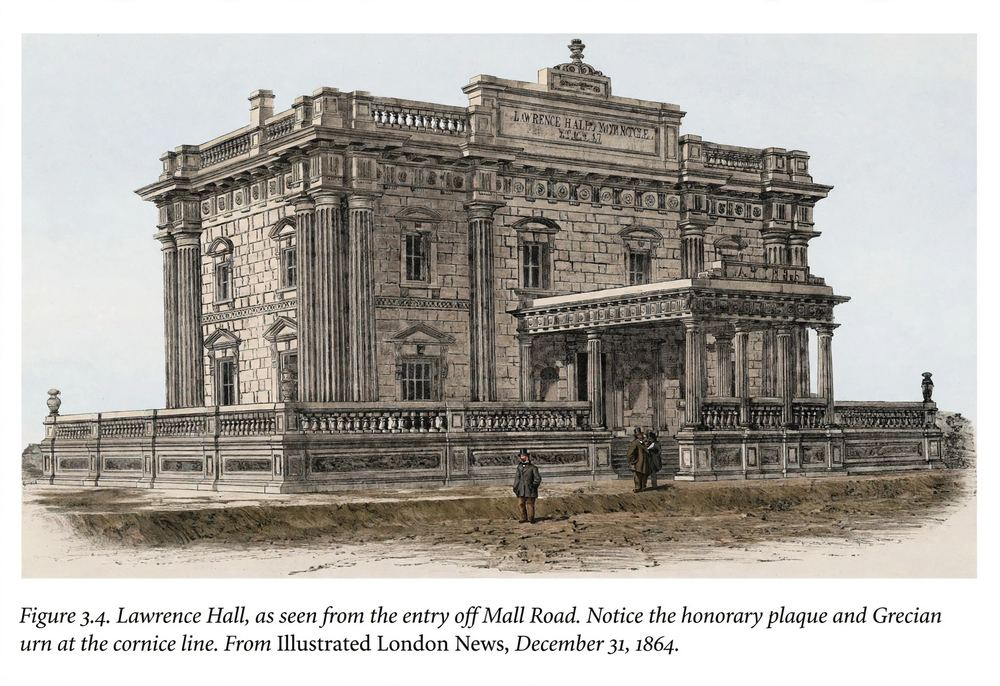
17
Figure 3.4. Lawrence Hall, as seen from the entry off Mall Road. Notice the honorary plaque and Grecian urn at the cornice line. From Illustrated London News, December 31, 1864.
تصویر 3.4: لارنس ہال، مال روڈ کی طرف کے دروازے سے منظر۔ ماخذ: السٹریٹڈ لندن نیوز، 31 دسمبر 1864ء۔
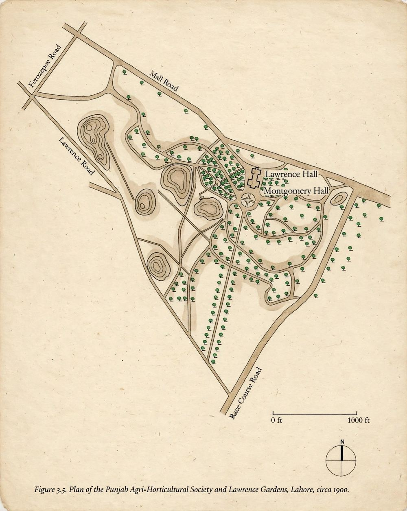
18
Figure 3.5. Plan of the Punjab Agri-Horticultural Society and Lawrence Gardens, Lahore, circa 1900.
تصویر 3.5: پنجاب ایگری ہارٹیکلچرل سوسائٹی اور لارنس گارڈنز لاہور کا نقشہ، تقریباً 1900ء۔

19
Figure 3.6. Site plan of Aitchison Chiefs' College, Lahore, circa 1889.
تصویر 3.6: ایچی سن چیفس کالج لاہور کا سائٹ نقشہ، تقریباً 1889ء۔
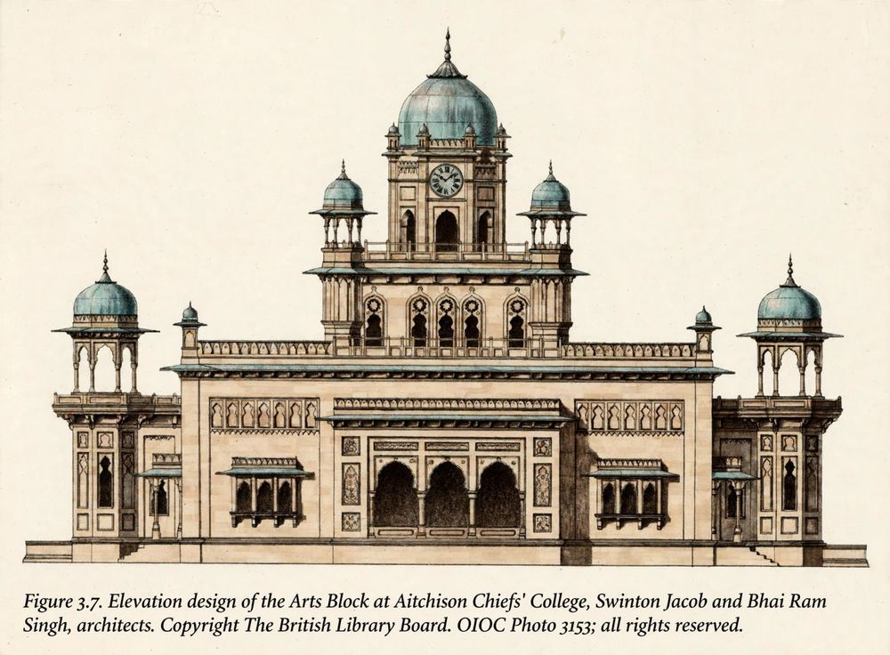
20
Figure 3.7. Elevation design of the Arts Block at Aitchison Chiefs' College, Swinton Jacob and Bhai Ram Singh, architects. Copyright The British Library Board. OIOC Photo 3153; all rights reserved.
تصویر 3.7: ایچی سن چیفس کالج کے آرٹس بلاک کا اگلے رخ کا ڈیزائن، معمار سوئنٹن جیکب اور بھائی رام سنگھ۔
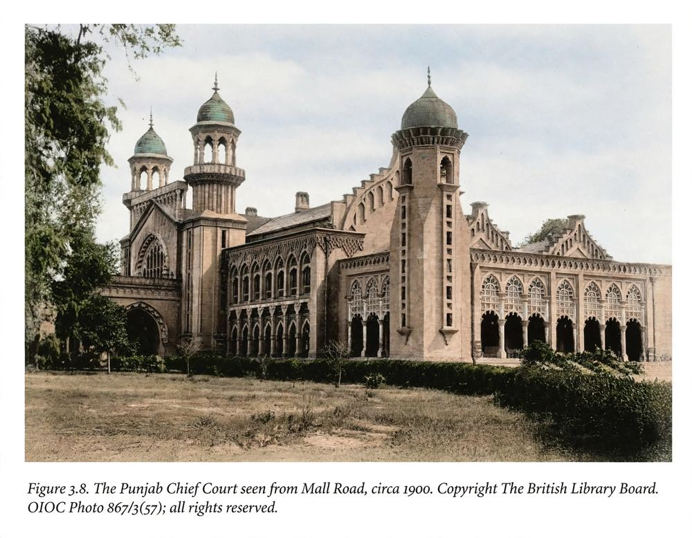
21
Figure 3.8. The Punjab Chief Court seen from Mall Road, circa 1900. Copyright The British Library Board. OIOC Photo 867/3(57); all rights reserved.
تصویر 3.8: پنجاب چیف کورٹ، مال روڈ سے منظر، تقریباً 1900ء۔
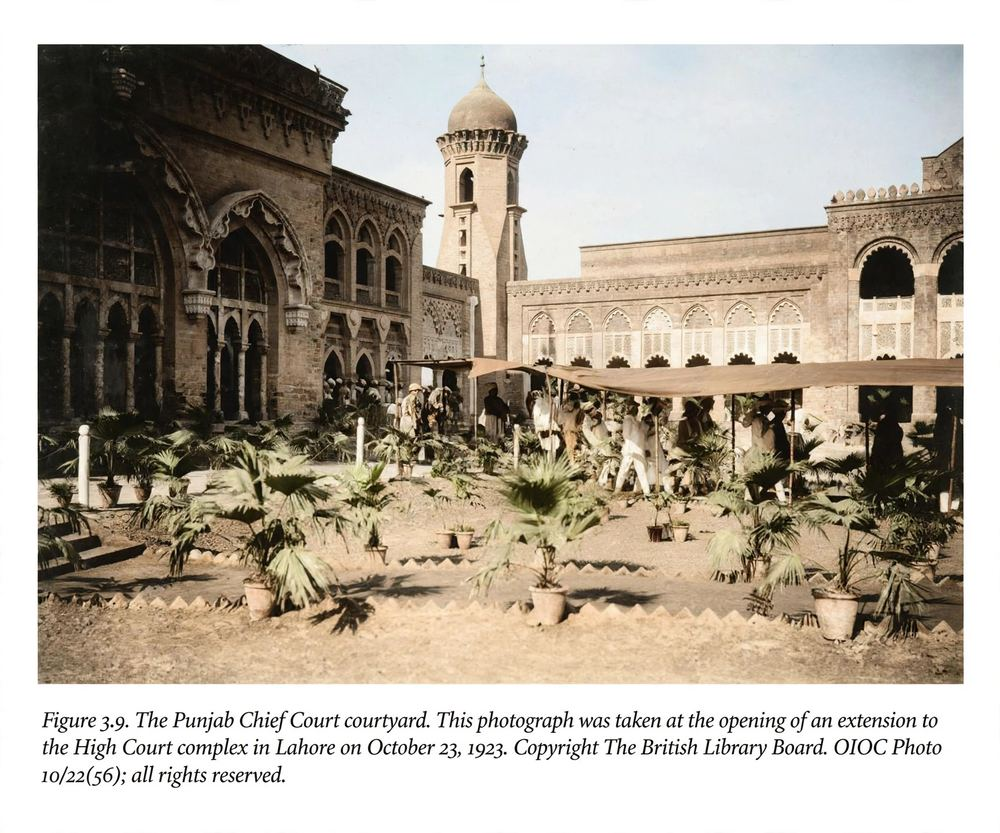
22
Figure 3.9. The Punjab Chief Court courtyard. This photograph was taken at the opening of an extension to the High Court complex in Lahore on October 23, 1923. Copyright The British Library Board. OIOC Photo 10/22(56); all rights reserved.
تصویر 3.9: پنجاب چیف کورٹ کا صحن؛ تصویر 23 اکتوبر 1923ء کو ہائی کورٹ کی نئی توسیع کے افتتاح کی ہے۔

23
Figure 3.10. Plan of the Punjab Chief Court.
تصویر 3.10: پنجاب چیف کورٹ کا نقشہ۔

24
Figure 3.11. Courtyard of the National College of Arts (formerly the Mayo School of Art), Lahore. The building at the center houses studios and exhibition space.
تصویر 3.11: نیشنل کالج آف آرٹس (سابق میو سکول آف آرٹ) لاہور کا صحن؛ درمیانی عمارت میں سٹوڈیوز اور نمائش گاہ ہے۔
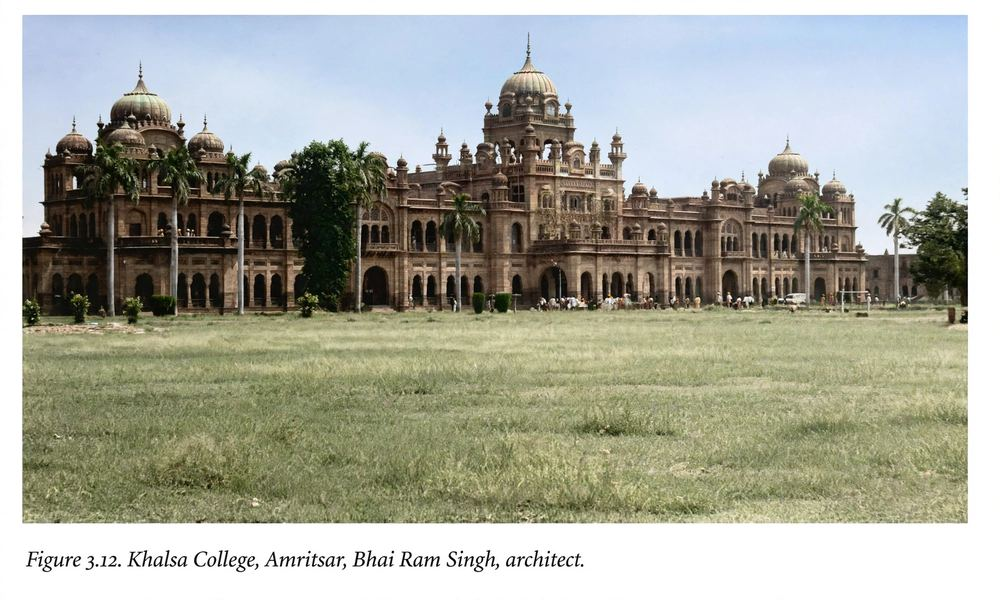
25
Figure 3.12. Khalsa College, Amritsar, Bhai Ram Singh, architect.
تصویر 3.12: خالصہ کالج امرتسر، معمار بھائی رام سنگھ۔
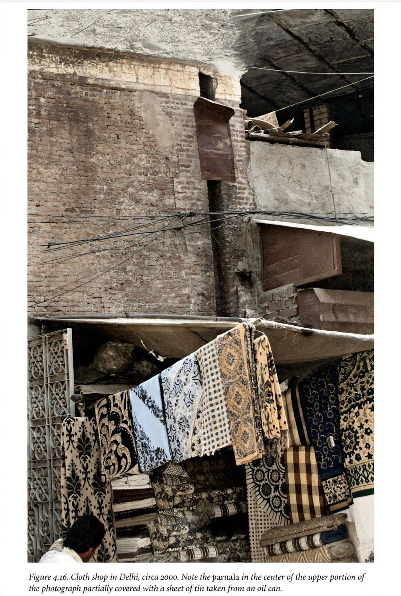
26
Figure 4.16. Cloth shop in Delhi, circa 2000. Note the parnala in the center of the upper portion of the photograph partially covered with a sheet of tin taken from an oil can.
تصویر 4.16: دہلی میں کپڑے کی دکان، تقریباً 2000ء؛ اوپر درمیان میں پرنالہ نظر آتا ہے جو تیل کے کنستر کی ٹین سے ڈھکا ہے۔
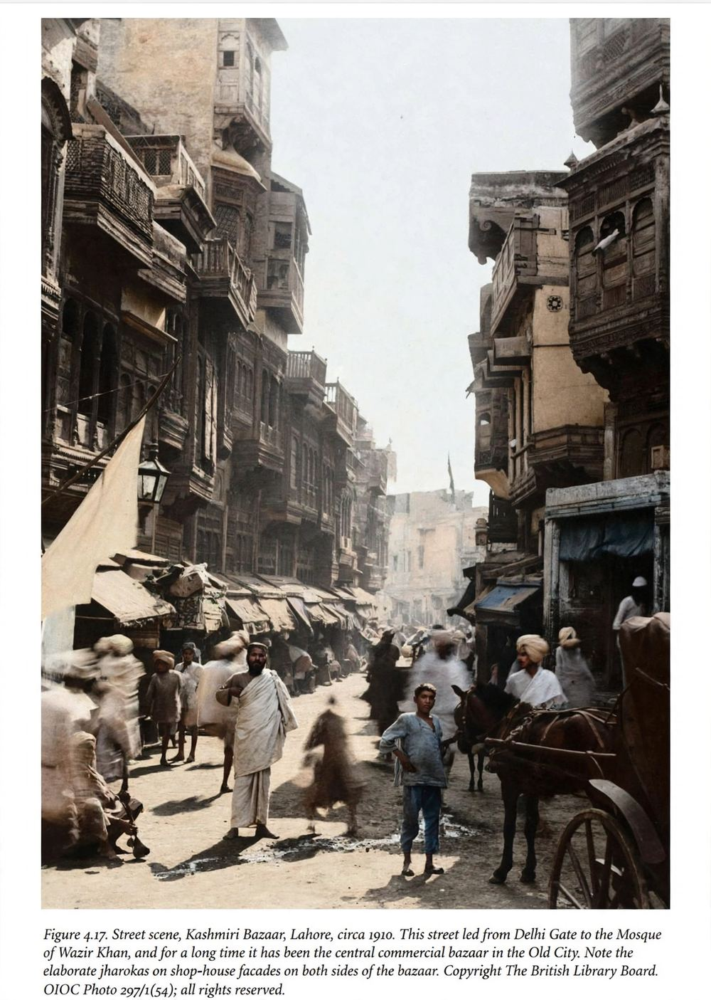
27
Figure 4.17. Street scene, Kashmiri Bazaar, Lahore, circa 1910. This street led from Delhi Gate to the Mosque of Wazir Khan, and for a long time it has been the central commercial bazaar in the Old City. Note the elaborate jharokas on shop-house facades on both sides of the bazaar. Copyright The British Library Board. OIOC Photo 297/1(54); all rights reserved.
تصویر 4.17: کشمیری بازار لاہور کا منظر، تقریباً 1910ء؛ یہ گلی دہلی دروازے سے مسجد وزیر خان تک جاتی تھی اور دونوں طرف خوبصورت جھروکے ہیں۔

28
Figure 4.18. A multipart jharoka with fine pinjra work, Lahore, circa 1890. Copyright The British Library Board. OIOC Photo 405/3(44); all rights reserved.
تصویر 4.18: لاہور کا کئی حصوں والا جھروکا جس میں نفیس پنجرہ کاری ہے، تقریباً 1890ء۔
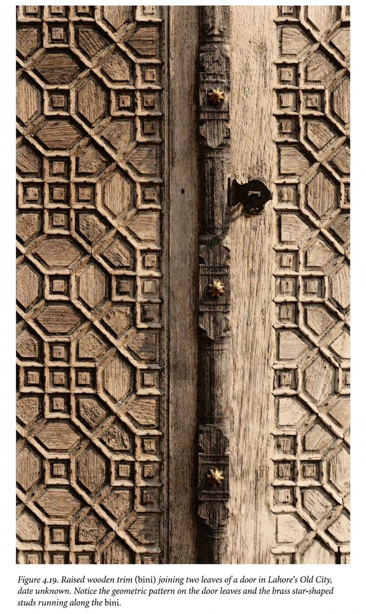
29
Figure 4.19. Raised wooden trim (bini) joining two leaves of a door in Lahore's Old City, date unknown. Notice the geometric pattern on the door leaves and the brass star-shaped studs running along the bini.
تصویر 4.19: پرانے لاہور کے ایک دروازے کے دونوں پٹوں کو جوڑنے والی ابھری ہوئی لکڑی کی پٹی (بینی)، جس پر پیتل کے ستارہ نما کیل لگے ہیں۔

30
Figure 4.20. Built-in shelving and fireplace surrounds in a ruined structure near the Old City, circa 2001. Notice the chandaans (ventilating apertures) placed high in the walls and the plaster finish on walls. This building probably dates from around 1910.
تصویر 4.20: پرانے شہر کے قریب ایک کھنڈر عمارت میں دیواروں میں بنی الماریاں اور آتش دان، تقریباً 2001ء؛ عمارت غالباً 1910ء کے آس پاس کی ہے۔
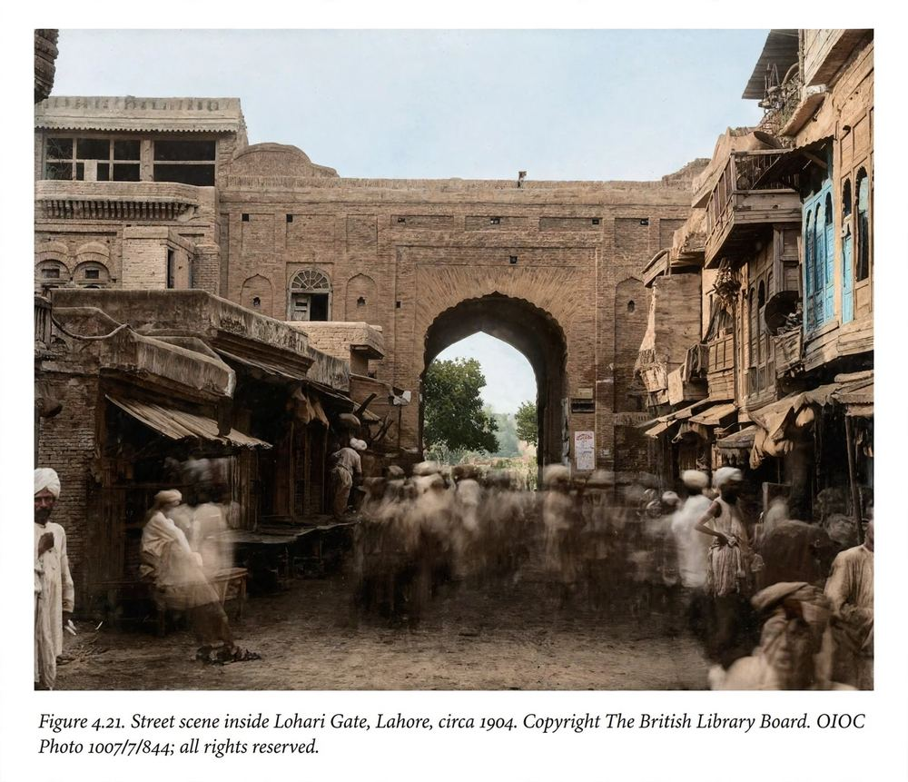
31
Figure 4.21. Street scene inside Lohari Gate, Lahore, circa 1904. Copyright The British Library Board. OIOC Photo 1007/7/844; all rights reserved.
تصویر 4.21: لوہاری دروازے کے اندر کا منظر، لاہور، تقریباً 1904ء۔
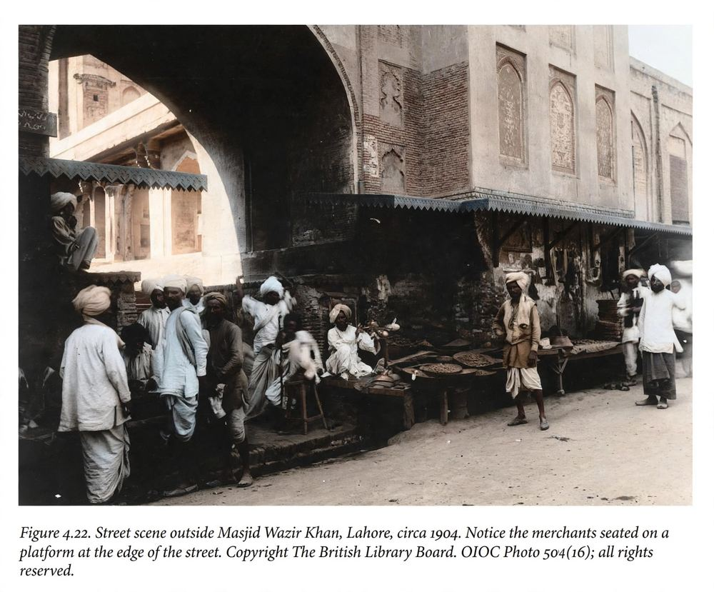
32
Figure 4.22. Street scene outside Masjid Wazir Khan, Lahore, circa 1904. Notice the merchants seated on a platform at the edge of the street. Copyright The British Library Board. OIOC Photo 504(16); all rights reserved.
تصویر 4.22: مسجد وزیر خان کے باہر کا منظر، لاہور، تقریباً 1904ء؛ تاجر گلی کے کنارے چبوترے پر بیٹھے ہیں۔
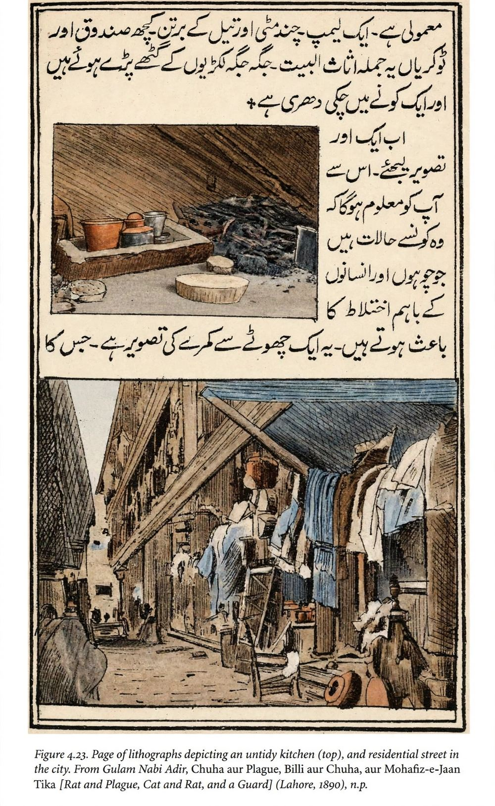
33
Figure 4.23. Page of lithographs depicting an untidy kitchen (top), and residential street in the city. From Gulam Nabi Adir, Chuha aur Plague, Billi aur Chuha, aur Mohafiz-e-Jaan Tika [Rat and Plague, Cat and Rat, and a Guard] (Lahore, 1890), n.p.
تصویر 4.23: پتھر چھاپ تصویروں کا صفحہ — اوپر بے ترتیب باورچی خانہ اور نیچے شہر کی رہائشی گلی؛ ماخذ: غلام نبی عادل کی کتاب ”چوہا اور پلیگ“، لاہور 1890ء۔
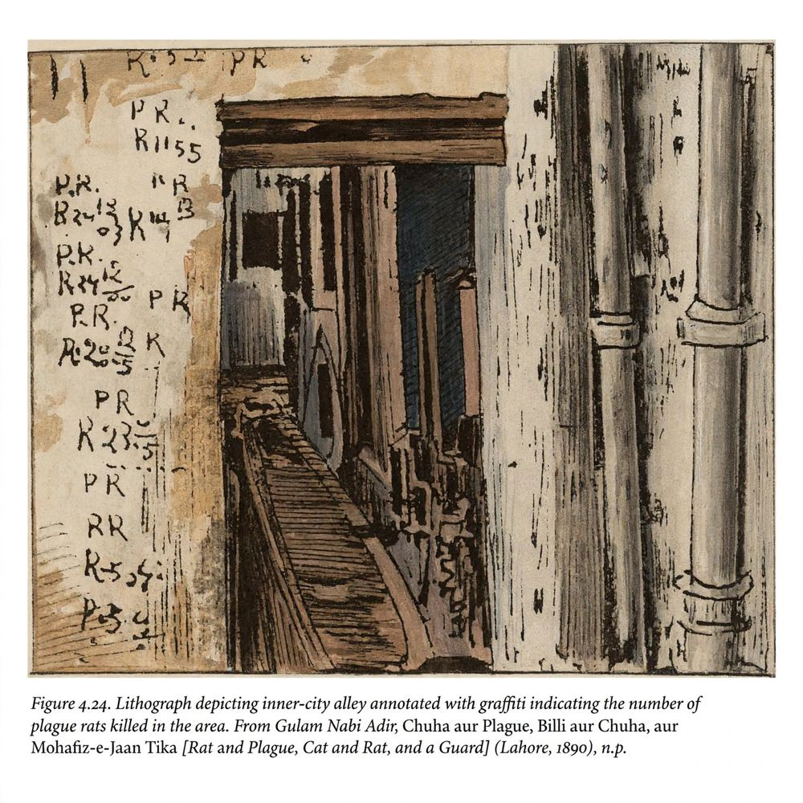
34
Figure 4.24. Lithograph depicting inner-city alley annotated with graffiti indicating the number of plague rats killed in the area. From Gulam Nabi Adir, Chuha aur Plague, Billi aur Chuha, aur Mohafiz-e-Jaan Tika [Rat and Plague, Cat and Rat, and a Guard] (Lahore, 1890), n.p.
تصویر 4.24: اندرون شہر کی گلی کا خاکہ جس کی دیوار پر علاقے میں مارے گئے پلیگ والے چوہوں کی تعداد لکھی ہے؛ ماخذ: غلام نبی عادل، 1890ء۔

35
Figure 4.25. A “modern” house in the Old City of Lahore, circa 1920s.
تصویر 4.25: پرانے لاہور میں ایک ”جدید“ مکان، تقریباً 1920ء کی دہائی۔
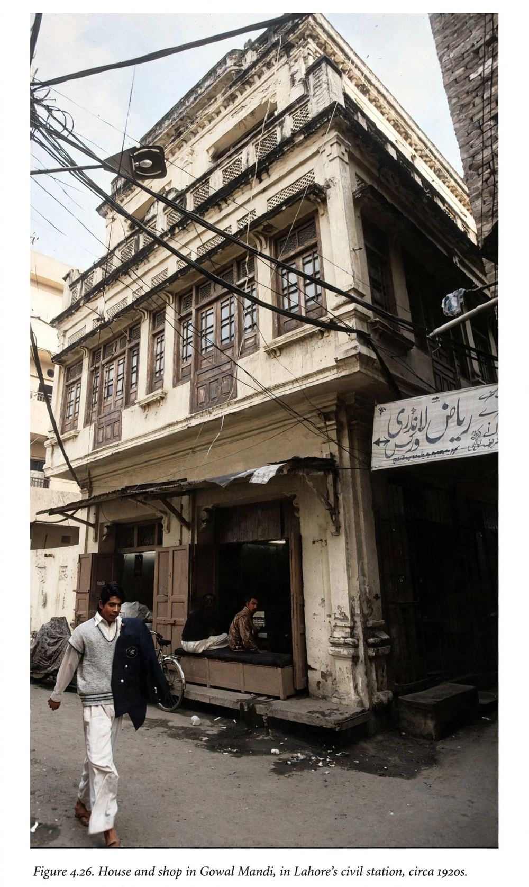
36
Figure 4.26. House and shop in Gowal Mandi, in Lahore's civil station, circa 1920s.
تصویر 4.26: گوالمنڈی لاہور میں مکان اور دکان، تقریباً 1920ء کی دہائی۔

37
Figure 4.33. Street of houses in Purana Anarkali, an Indian suburb developed in the 1930s.
تصویر 4.33: پرانا انارکلی میں مکانوں کی گلی، جو 1930ء کی دہائی میں آباد ہوا۔
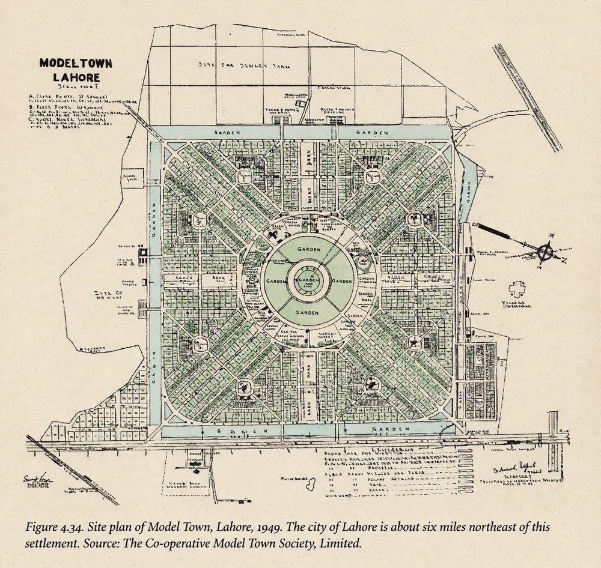
38
Figure 4.34. Site plan of Model Town, Lahore, 1949. The city of Lahore is about six miles northeast of this settlement. Source: The Co-operative Model Town Society, Limited.
تصویر 4.34: ماڈل ٹاؤن لاہور کا سائٹ نقشہ، 1949ء؛ لاہور شہر اس بستی سے تقریباً چھ میل شمال مشرق میں ہے۔
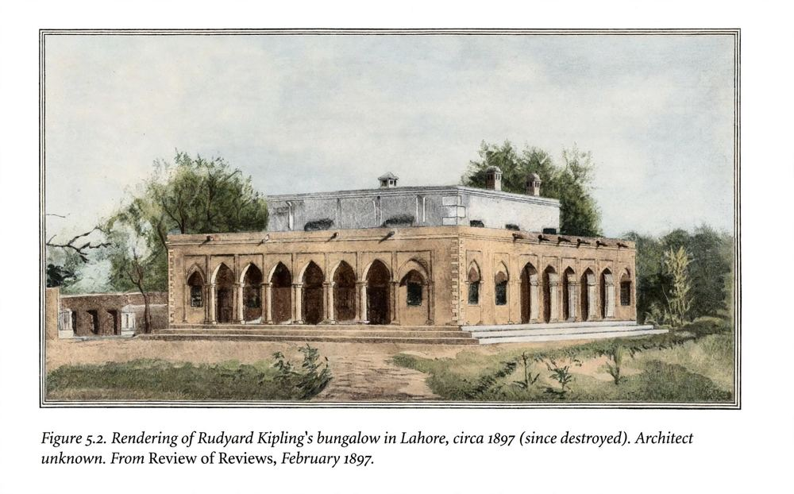
39
Figure 5.2. Rendering of Rudyard Kipling's bungalow in Lahore, circa 1897 (since destroyed). Architect unknown. From Review of Reviews, February 1897.
تصویر 5.2: لاہور میں رڈیارڈ کپلنگ کے بنگلے کا خاکہ، تقریباً 1897ء (اب یہ عمارت موجود نہیں)۔

40
Figure 6.2. Mall Road outside the Punjab Chief Court building, circa 1930. A statue of John Lawrence, wielding a sword in one hand and a pen in the other, appears at left. Copyright The British Library Board. OIOC Photo 627/66; all rights reserved.
تصویر 6.2: پنجاب چیف کورٹ کے باہر مال روڈ، تقریباً 1930ء؛ بائیں طرف جان لارنس کا مجسمہ ہے جس کے ایک ہاتھ میں تلوار اور دوسرے میں قلم ہے۔